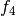
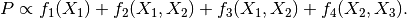
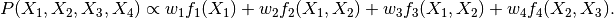
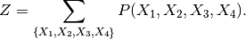
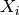
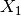
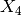

In the propagation of information, we are usually dealing with such relations that some system (factor)  is related to some inputs (variable)
is related to some inputs (variable)  .
.
Factor graph builds such networks of relations. In such a graph, we use boxes to represent factors, and circles to represent variables.
From Factor Graph @ Wikipedia.
Suppose we need to find out the probability of factor , we have to take in the two variables and .
One important question is that we can actually calculate the probability of a specific configuration of the variables, which is

In general, we can assign weights  to each factors
to each factors  , so that the probability of each set of variables is
, so that the probability of each set of variables is

The normalization is the partition function, i.e., the summation of all the possible combinations of variables,

As an example, we consider  is 0 or 1. The combinations are (partially) listed below.
|  | 0 | 1 | 1 | 1 | ... |
| 0 | 0 | 1 | 1 | ... | |
| 0 | 0 | 0 | 1 | ... | |
|  | 0 | 0 | 0 | 0 | ... |

{kind=link}